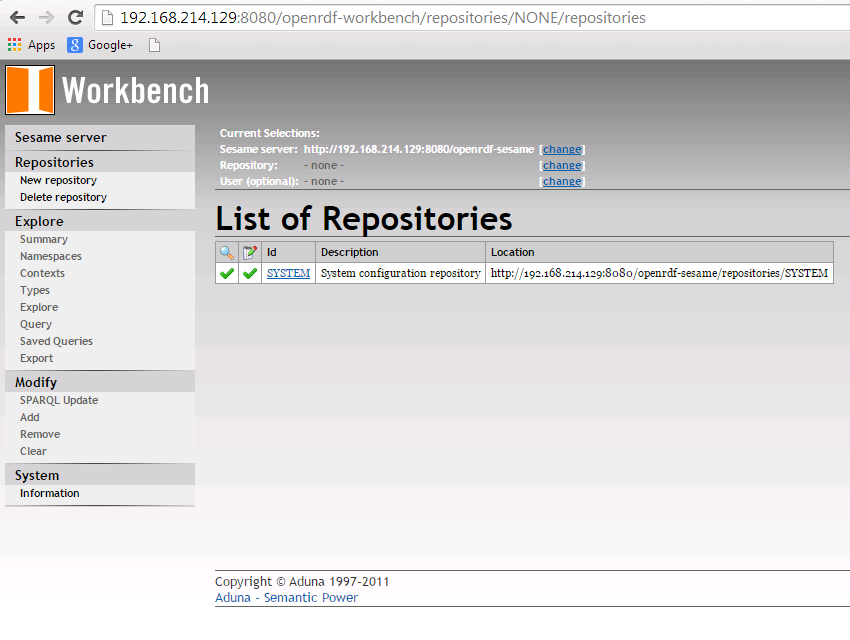
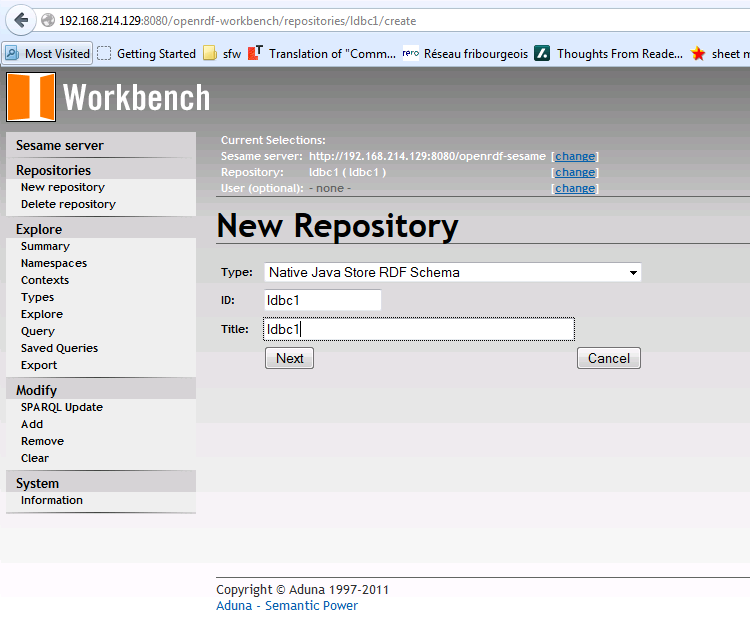

Until now we have discussed several aspects of the Semantic Publishing Benchmark (SPB) such as the difference in performance between virtual and real servers configuration, how to choose an appropriate query mix for a benchmark run and our experience with using SPB in the development process of GraphDB for finding performance issues.
In this post we provide a step-by-step guide on how to run SPB using the Sesame RDF data store on a fresh install of Ubuntu Server 14.04.1. The scenario is easy to adapt to other RDF triple stores which support the Sesame Framework used for querying and analyzing RDF data.
Prerequisites
We start with a fresh server installation, but before proceeding with setup of the Sesame Data Store and SPB benchmark we need the following pieces of software up and running:
- Git
- Apache Ant 1.8 or higher
- OpenJDK 6 or Oracle JDK 6 or higher
- Apache Tomcat 7 or higher
If you already have these components installed on your machine you can directly proceed to the next section: Installing Sesame
Following are sample commands which can be used to install the required software components:
sudo apt-get install git
sudo apt-get install ant
sudo apt-get install default-jdk
sudo apt-get install tomcat7
Optionally Apache Tomcat Server can be downloaded as a zipped file and extracted in a location of choice.
After a successful installation of Apache Tomcat you should be able to get the default splash page “It works” when you open your web browser and enter the following address: http://<your_ip_address>:8080
Installing Sesame
We will use current Sesame version 2.7.14. You can download it here or run following command:
wget \\
"http://sourceforge.net/projects/sesame/files/Sesame%202/2.7.14/openrdf-sesame-2.7.14-sdk.tar.gz/download" \\
-O openrdf-sesame-2.7.14-sdk.tar.gz
Then extract the Sesame tarball:
tar -xvzf openrdf-sesame-2.7.14-sdk.tar.gz
To deploy sesame you have to copy the two war files that are in openrdf-sesame-2.7.14/war to /var/lib/tomcat7/webapps
From openrdf-sesame-2.7.14/war you can do it with command:
cp openrdf-*.war <tomcat_install>/webapps
Sesame applications write and store configuration files in a single directory and the tomcat server needs permissions for it.
By default the configuration directory is: /usr/share/tomcat7/.aduna
Create the directory:
sudo mkdir /usr/share/tomcat7/.aduna
Then change the ownership:
sudo chown tomcat7 /usr/share/tomcat7/.aduna
And finally you should give the necessary permissions:
sudo chmod o+rwx /usr/share/tomcat7/.aduna
Now when you go to: http://<your_ip_address>:8080/openrdf-workbench/repositories
You should get a screen like this:

Setup SPB
You can download the SPB code and find brief documentation on GitHub:
https://github.com/ldbc/ldbc_spb_bm
A detailed documentation is located here:
https://github.com/ldbc/ldbc_spb_bm/blob/master/doc/LDBC_SPB_v0.3.pdf
SPB offers many configuration options which control various features of the benchmark e.g.:
- query mixes
- dataset size
- loading datasets
- number of agents
- validating results
- test conformance to OWL2-RL ruleset
- update rate of agents
Here we demonstrate how to generate a dataset and execute a simple test
run with it.
First download the SPB source code from the repository:
git clone https://github.com/ldbc/ldbc_spb_bm.git
Then in the ldbc_spb_bm directory build the project:
ant build-basic-querymix
If you simply execute the command:
ant
you’ll get a list of all available build configurations for the SPB test driver, but for the purpose of this step-by-step guide, configuration shown above is sufficient.
Depending on generated dataset size a bigger java heap size may be required for the Sesame Store. You can change it by adding following arguments to Tomcat’s startup files e.g. in catalina.sh:
export JAVA_OPTS="-d64 -Xmx4G"
To run the Benchmark you need to create a repository in the Sesame Data Store, similar to the following screenshot:

Then we need to point the benchmark test driver to the SPARQL endpoint of that repository. This is done in ldbc_spb_bm/dist/test.properties file.
The default value of datasetSize in the properties is set to be 10M, but for the purpose of this guide we will decrease it to 1M.
You need to change
datasetSize=1000000
Also the URLs of the SPARQL endpoint for the repository
endpointURL=http://localhost:8080/openrdf-sesame/repositories/ldbc1
endpointUpdateURL=http://localhost:8080/openrdf-sesame/repositories/ldbc1/statements
First step, before measuring the performance of a triple store, is to load the reference-knowledge data, generate a 1M dataset, load it into the repository and finally generate query substitution parameters.
These are the settings to do that, following parameters will ‘instruct’ the SPB test driver to perform all the actions described above:
#Benchmark Operational Phases
loadOntologies=true
loadReferenceDatasets=true
generateCreativeWorks=true
loadCreativeWorks=true
generateQuerySubstitutionParameters=true
validateQueryResults=false
warmUp=false
runBenchmark=false
runBenchmarkOnlineReplicationAndBackup=false
checkConformance=false
To run the benchmark execute the following:
java -jar semantic_publishing_benchmark-basic-standard.jar
test.properties
When the initial run has finished, we should have a 1M dataset loaded into the repository and a set of files with query substitution parameters.
Next we will measure the performance of Sesame Data Store by changing some configuration properties:
#Benchmark Configuration Parameters
warmupPeriodSeconds=60
benchmarkRunPeriodSeconds=300
...
#Benchmark Operational Phases
loadOntologies=false
loadReferenceDatasets=false
generateCreativeWorks=false
loadCreativeWorks=false
generateQuerySubstitutionParameters=false
validateQueryResults=false
warmUp=true
runBenchmark=true
runBenchmarkOnlineReplicationAndBackup=false
checkConformance=false
After the benchmark test run has finished result files are saved in folder: dist/logs
There you will find three types of results: the result summary of the benchmark run (semantic_publishing_benchmark_results.log), brief results and detailed results.
In semantic_publishing_benchmark_results.log you will find the results distributed per seconds. They should be similar to the listing bellow:
Benchmark Results for the 300-th second
Seconds : 300 (completed query mixes : 0)
Editorial:
2 agents
9 inserts (avg : 22484 ms, min : 115 ms, max : 81389 ms)
0 updates (avg : 0 ms, min : 0 ms, max : 0 ms)
0 deletes (avg : 0 ms, min : 0 ms, max : 0 ms)
9 operations (9 CW Inserts (0 errors), 0 CW Updates (1 errors), 0 CW Deletions (2 errors))
0.0300 average operations per second
Aggregation:
8 agents
2 Q1 queries (avg : 319 ms, min : 188 ms, max : 451 ms, 0 errors)
3 Q2 queries (avg : 550 ms, min : 256 ms, max : 937 ms, 0 errors)
1 Q3 queries (avg : 58380 ms, min : 58380 ms, max : 58380 ms, 0 errors)
2 Q4 queries (avg : 65250 ms, min : 40024 ms, max : 90476 ms, 0 errors)
1 Q5 queries (avg : 84220 ms, min : 84220 ms, max : 84220 ms, 0 errors)
2 Q6 queries (avg : 34620 ms, min : 24499 ms, max : 44741 ms, 0 errors)
3 Q7 queries (avg : 5892 ms, min : 4410 ms, max : 8528 ms, 0 errors)
2 Q8 queries (avg : 3537 ms, min : 546 ms, max : 6528 ms, 0 errors)
4 Q9 queries (avg : 148573 ms, min : 139078 ms, max : 169559 ms, 0 errors)
This step-by-step guide gave an introduction on how to setup and run the SPB on a Sesame Data Store. Further details can be found in the reference documentation listed above.
If you have any troubles running the benchmark, don’t hesitate to comment or use our social media channels.
In a future post we will go through some of the parameters of SPB and check their performance implications.